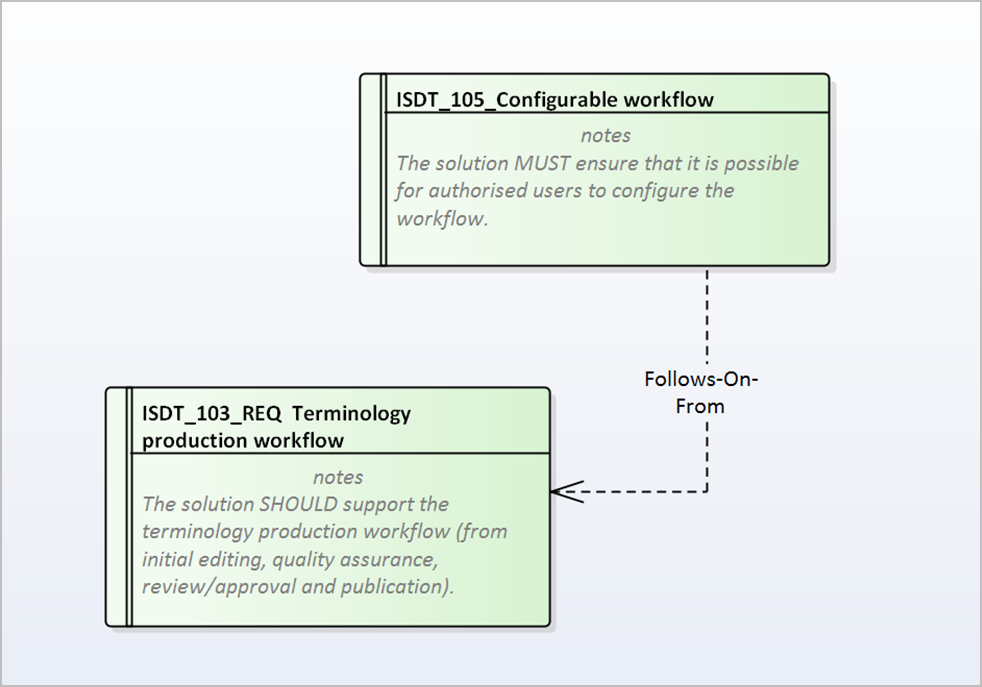
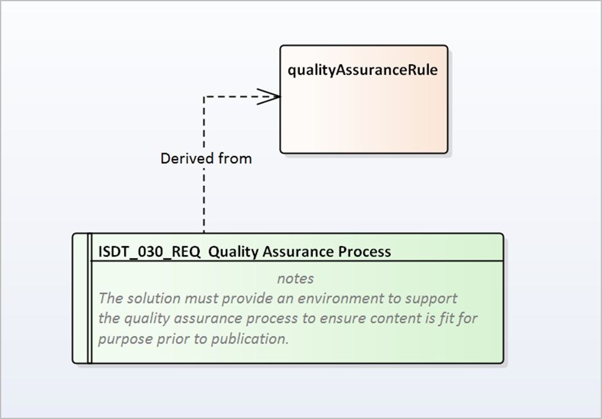

Requirements Diagram (Adopted Notations)
ArtReqDiagAN Requirements Diagram (Adopted Notations)
Amendments History
| Date | Ver. | Inc. | Author | Amendment | Status |
|---|---|---|---|---|---|
| February 2010 | 0 | 1 | Bob Cox | New Topic created to migrate content from Word Authoring Guide v2.0 | Draft |
This section outlines the Adopted Notations for Requirements Diagram Artefacts — (for an example see figure: example requirements diagram):
|
Entity |
Definition / Context |
Core Notations |
|||||||||
|---|---|---|---|---|---|---|---|---|---|---|---|
|
Requirements Elements:
 |
“Requirements Elements are used to articulate single requirements within an Analysis Model.”
- Further details regarding the Adopted Notations for the classification of this element-type are available in the section:
Requirements Elements (Adopted Notations).
The purpose of a Requirements Element is to fully describe an individual Requirement, defining how it will affect the service
/ system being developed as well as its source
|
Represented as rectangular box elements, can be divided into a number of sections:
|
|||||||||
|
“A range of defined associations are available for use on Requirements Diagrams.” |
Constraints may NOT be recorded against Associations on Requirements Diagrams.
|
||||||||||
|
Aggregation Association:
 |
“An Aggregation Association is a type of association that shows that an element contains or is composed of other elements.”
It is used in models to show how more complex elements (aggregates) are built from a collection of simpler elements.
An Aggregation Association on a requirements Diagram shows where one Requirement is made up of several other Requirements. |
Aggregate Associations are denoted by a line between the requirements with a diamond at the ‘whole’ end of the line.
Multiplicity is not used.
.
|
|||||||||
|
Depends-On Association:
 |
“A ‘Depends-On’ Association is to show where there is a dependency between requirements.”
The purpose of a ‘Depends-On’ Association is to show where there is a dependency between Requirements; where one depends on
another requirement to achieve its goal.
|
Uses a directional dependency association (with a stereotype of <<depends on>>).
Is represent by a dashed line with an open arrowhead(s) at the parent end of the association.
Is used between Requirement Elements.
|
|||||||||
|
Follows-on-From Association:

|
“A Follows-On-From Association is a trace association to show dependencies between requirements.”
The purpose of a ‘Follows-on-From’ Association is to show where the need for a Requirement has been derived from another Requirement. |
Uses a directional dependency Association (with a stereotype of <<followsonfrom>>).
Is represented as a dashed line with an open arrowhead at the ‘parent’ end of the association.
Is used between Requirement Elements.
|
|||||||||
|
Derived-From Association:

|
“A Derived-From Association is a directional dependency association directed from a Requirement to any non-Requirement element.”
The purpose of a ‘Derived-From’ Association is to show where a the need for a Requirement depends upon another element(s)
— (e.g. a class defining the primary key of a patient demographic system as the NHS number is the ‘reason’ for having a Requirement
that patients are identified using NHS numbers).
A Requirement may be derived from many elements and an element may in-turn be used to derive many Requirements. |
Uses a directional dependency association (with the stereotype <<derived-from>>.
Denoted by a dashed line with an open arrowhead(s) from the requirement pointing towards the other model element.
Is used:
|
|||||||||
|
Realization / Realize Association:
 |
“A Realization / Realize Association can be created between a Use Case and other types of elements.”
On a requirements diagram this type of Association is used to identifies where a non requirement Element ‘realises’ or implements
the goals / aims of a requirement element
|
Is represented as a dashed line with filled arrowhead, pointing toward the requirement element (with the stereotype <<realises>>
on the Association).
Is used between Requirement elements and Non-Requirement Elements.
|